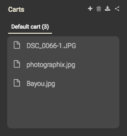

This plugin adds a component to the web interface that provides the ability to pick one or more files/folders from any location inside a workspace, and download this selection as a whole in Zip format.
This can be really handy for big media libraries for picking e.g. photos and building an exportable selection. The "carts" can be saved, and the plugin can also be used to save all results of a specific search as a cart as well.
